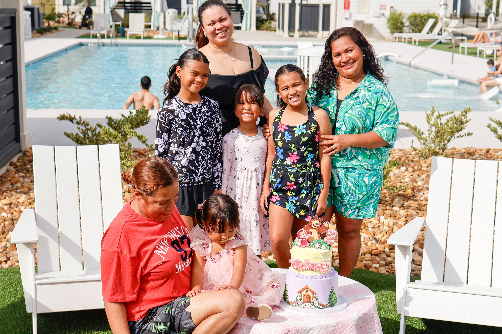

VALERIA · CUMPLEAÑOS #2
Un día feliz.
Recuerdos para
siempre.
Las grandes sonrisas. Los pequeños detalles. Las personas que lo hacen especial. Tu celebración, guardada con cariño.
Ver tus fotos
PERSONAS ESPECIALES. MOMENTOS INOLVIDABLES.01 / LA CELEBRACIÓN
TU COLECCIÓN DE FOTOS
Momentos que se quedan.
Mira con calma. Elige tus favoritas.
Conserva un pedacito de este día.
Algunos momentos espontáneos más, guardados con cariño.
Aún no tienes favoritas. Toca el corazón de una foto para guardarla aquí.
No se pudieron cargar las fotos. Actualiza la página para volver a intentarlo.
✳
Hay días que merecen recordarse.
LONG TABLE MEDIA